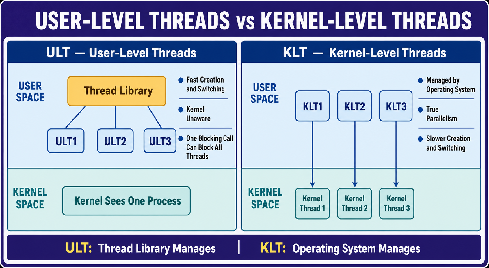

Types of Threading
User-Level Threads, Kernel-Level Threads, management, blocking behavior, parallelism, and comparisons.

User-Level Threads, Kernel-Level Threads, management, blocking behavior, parallelism, and comparisons.
